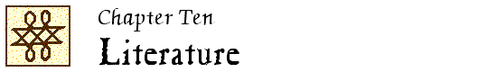

John Locke Chronology |
John Locke Manuscripts |
John Locke Resources |
John Locke Bibliography | ||

 1961
1961
“Hobbes, Locke, e la ‘discretion’ della poesia” / Luciano Anceschi. // IN: Rivista di estetica. – 6 (1961):397-413.
Reprinted in: (1) Studi di varia umanità in onore di Francesco Flora. – [Milano] : A. Mondadori, 1963. – p. 882-897; and (2) Da Bacone a Kant : saggi di estetica / Luciano Anceschi. – Bologna : Il Mulino, ©1972. – p. 69-90.
M 193, 207, 253; H&W 1983; Y&Y 1961.2, 1963.1
“Tristram Shandy and language” / Robert J. Griffin. // IN: College English. – 23 (1961/62):108-112.
LNL 4:21; H&W 1983
“Poe’s indebtedness to Locke’s An essay concerning human understanding” / S. Gerald Sandler. // IN: Boston University studies in English. – 5 (1961):107-121.
LNL 4:19; H&W 1983; Y&Y 1961.21
“An essay on man and ‘the way of ideas’ : some further thoughts” / by Ernest Tuveson. // IN: Philological quarterly. – 40 (1961):262-269.
Reply to Robert Marsh’s review of Tuveson, “An essay on man and ‘the way of ideas’ ” (1959)
LNL 4:19; H&W 1983; Y&Y 1961.25
1962
“The meaning of Gulliver’s last voyage” / Irvin Ehrenpreis. // IN: Review of English literature. – 3:no. 3 (July 1962):18-38.
H&W 1983
Economics and the fiction of Daniel Defoe / by Maximilian E. Novak. – Berkeley : University of California Press, 1962. – (University of California publications. English studies ; 24)
See Ch. 3, “The economic meaning of Robinson Crusoe” (p. 49-66)
“Locke and Sterne” / Ernest Tuveson. // IN: Reason and the imagination : studies in the history of ideas, 1600-1800 / edited by J.A. Mazzeo. – New York : Columbia University Press ; London : Routledge & K. Paul, 1962. – p. 255-277.
Reprinted in: English literature and British philosophy : a collection of essays / edited with an introduction by S.P. Rosenbaum. – Chicago : London : University of Chicago Press, 1971. – p. 86-108.
H&W 396; H&W 1983; LNL 3:2; Y&Y 1962.31, 1971.29
1964
“Gulliver’s travels, an essay on human understanding?” / by W.B. Carnochan. // IN: Modern language quarterly. – 25 (1964):5-21.
H&W 1983; Y&Y 1964.6
“The sermon in Tristram Shandy” / by Arthur H. Cash. // IN: ELH : a journal of English literary history. – 31 (1964):395-417.
1965
Coleridge’s philosophy of literature : the development of a concept of poetry, 1791-1819 / J.A. Appleyard. – Cambridge, Mass. : Harvard University Press, 1965.
See Ch. 3, “Shaping a philosophy, 1800-1808” (p. 70-122)
“Situations of identity in the Memoirs of Martin Scriblerus.” – See entry in Chapter 3.
Illusion und Wirklichkeit in Tristram Shandy und Jacques le Fataliste / von Rainer Warning. – München : W. Fink, ©1965. – (Theorie und Geschichte der Literatur und der schönen Künste : Texte und Abhandlungen ; Band 4)
See “Sterne im Verhältnis zu Locke und den zeitgenössischen Ästhetikern” (p. 60-66)
H&W 1983
1966
“Addison and Akenside : the impact of psychological criticism on early English Romantic poetry” / John L. Mahoney. // IN: British journal of aesthetics. – 6 (1966):365-374.
H&W 266; H&W 1983; Y&Y 1966.18
1967
“Blake’s crystal cabinet” / John Adlard. // IN: Modern language review. – 62 (1967):28-30.
“Locke, Cudworth and Young’s ‘Night thoughts’ ” / Daniel W. Odell. // IN: English language notes. – 4 (1966/67):188-193.
H&W 396; H&W 1983; Y&Y 1967.38
Wordsworth, a philosophical approach / by Melvin Rader. – Oxford : Clarendon Press, 1967.
See esp. /Newton, Locke and Berkeley” (p. 43-49)
1968
Lemuel Gulliver’s mirror for man / W.B. Carnochan. – Berkeley : University of California Press, 1968.
See 4, “Gulliver and the human understanding” (p. 116-165); based on Carnochan, “Gulliver’s travels, an essay on human understanding?” (1964)
H&W 1983
“Another source for ‘The raven’ : Locke’s Essay concerning human understanding” / Kevin M. McCarthy. // IN: Poe newsletter. – 1 (1968):29.
LNL 4:23; H&W 1983; Y&Y 1968.19
“Locke’s conception of the conjugal contract and Congreve’s proviso scene in The way of the world” / Max Wildi. // IN: Festschrift für Walther Hug zum 70. Geburtstag / herausgegeben von Riccardo L. Jagmetti und Walter R. Schluep. – Bern : Stämpfli, 1968. – p. 691-702.
Reprinted in: Der englische Frauenroman : und andere Aufsätze / Max Wildi. – Berne : Francke, 1976. – (Schweizer anglistische Arbeiten = Swiss studies in English ; Band 88). – p. 164-175.
LNL 4:23; H&W 1983; Y&Y 1968.30
1969
“Associationism and wit in Tristram Shandy” / by Howard Anderson. // IN: Philological quarterly. – 48 (1969):27-41.
H&W 1983
“Sterne and Hume : a bicentenary essay” / Francis Doherty. // IN: Essays and studies. – New series:22 (1969):71-87.
Y&Y 1969.9
“Science and the discovery of the imagination in enlightened England” / G.S. Rousseau. // IN: Eighteenth-century studies. – 3 (1969/70):108-135.
1970
Locke and Hume in the philosophical comedy of Tristram Shandy / by Chinmoy Banerjee. – Thesis (Ph.D.)–Kent State University, 1970. – vi, 244 leaves.
H&W 1983; Y&Y 1970.6
“The clockwork novel : three notes on an eighteenth-century analogy” / by Ian Donaldson. // IN: Review of English studies. – New series:21 (1970):14-22.
LNL 4:3; H&W 1983
Locke’s influence on Tristram Shandy / Michael Anthony Giles. – Thesis (M.A.)–University of Virginia, 1970. – 32 leaves.
“Laurence Sterne and Henry Baker’s The microscope made easy” / Melvyn New. // IN: Studies in English literature, 1500-1900. – 10 (1970):591-604.
1971
“A note on Laurence Sterne and the cannon-bullet of John Locke” / Carol A. Kyle. // IN: Philological quarterly. – 50 (1971):672-674.
Abstract: BullSig 27:410.
H&W 1983
“Ideas vs. words : Johnson, Locke and the editions of Shakespeare” / John H. Middendorf. // IN: English writers of the eighteenth century / edited by John H. Middendorf. – New York ; London : Columbia University Press, ©1971. – p. 249-272.
Y&Y 1971.16
“Laurence Sterne and the contemporary vision” / by Helene Moglen. // IN: The winged skull : papers from the Laurence Sterne Bicentenary Conference at the University of York … / edited by Arthur H. Cash and John M. Stedmond. – [Kent, Ohio] : Kent State University Press, ©1971. – p. 59-75.
H&W 1983
1972
“John Locke and the comedy of communication in Tristram Shandy” / Chinmoy Banerjee. // IN: Visva-Bharati quarterly. – 38 (1972/73):119-133.
H&W 1983
“Out of the ordinary road : John Locke and English juvenile fiction in the eighteenth century” / Robert Bator. // IN: Children’s literature. – 1 (1972):46-53.
Essays in English literature and history / by Irving I. Edgar. – New York : Philosophical Library, 1972.
See “Transition in English literature : John Bunyan, John J. [sic] Locke, and Jeremy Collier” (p. 71-88)
“Cervantes, John Locke, and Dr. Johnson” / Mack Singleton. // IN: Studia hispanica in honorem R. Lapesa. – Madrid : Gredos, 1972-75. – vol. 1 (1972):531-547.
H&W 1983
1973
The philosophic mind : a study of Wordsworth’s poetry and thought, 1797-1805 / by Alan Grob. – Columbus : Ohio State University Press, ©1973. – xii, 279 p.
Abstract: BPh 21:54.
“Locke and Sterne, or Can philosophy influence literature?” / Duke Maskell. // IN: Essays in criticism. – 23 (1973):22-40.
LNL 4:5; H&W 1983; Y&Y 1973.20
“Sherlock Holmes, Locke’s disciple.” – See entry in Chapter 3.
“Tabula rasa : Shelley’s metaphor of the mind” / Thomas A. Reinser. // IN: Ariel (Calgary). – 4:no. 2 (April 1973):90-102.
Keats the poet. – See entry in Chapter 3.
1974
The providence of wit : aspects of form in Augustan literature and the arts / Martin C. Battestin. – Oxford : Clarendon Press, 1974.
See /Sterne : the poetics of sensibility” (p. 241-269)
Nightmares and hobbyhorses : Swift, Sterne, and Augustan ideas of madness. – See entry in Chapter 3.
The discourse of the mind in eighteenth-century fiction. – See entry in Chapter 3.
Locke and Mr. Spectator : aspects of virtue … – See entry in Chapter 3.
A common sky : philosophy and the literary imagination. – See entry in Chapter 3.
1975
“Blake, Locke, & the concept of ‘generation’ ” / by James C. Evans. // IN: Blake newsletter. – 9 (1975/76):47-48.
H&W 1983
“Lockeian influences in the evolution of rhetorical theory” / L. Brooks Hill. // IN: Central states speech journal. – 26 (1975):107-114.
Y&Y 1975.19
“Unity and personal identity in ‘Eureka’ ” / Kevin M. McCarthy. // IN: American transcendental quarterly. – no. 26:pt. 1 (spring 1975):22-26.
The philosophical irony of Laurence Sterne / Helene Moglen. – Gainesville : University Presses of Florida, 1975.
See Ch. 1, “John Locke, the hero of Tristram Shandy” (p. 7-30)
LNL 7:6; H&W 1983
“Possible Lockean influence in ‘The world below the brine’ ” / John R. Stillgoe. // IN: Walt Whitman review. – 21 (1975):150-155.
“Some correlations between Swift’s Gulliver and Locke on personal identity” / Spencer and Linda Wertz. // IN: Journal of thought. – 10 (1975):262-271.
Abstracts: PhI 1976:364; BullSig 30:3667.
H&W 1983; Y&Y 1975.46
1976
“Locke, Alembert, and the anti-rhetoric of the Enlightenment” / by Ralph S. Pomeroy. // IN: Studies on Voltaire and the eighteenth century. – 154 (1976):1657-1675. – (Transactions of the Fourth International Congress on the Enlightenment ; vol. 4)
H&W 1983; Y&Y 1976.38
The Romantic sublime : studies in the structure and psychology of transcendence / Thomas Weiskel. – Baltimore ; London : Johns Hopkins University Press, 1976.
See Ch. 1, “Approaching the Romantic sublime” (p. 3-33)
Issued in paperback with a foreword by Harold Bloom, 1986.
1977
“ ‘A succession of amusements’ : the moralization in Rasselas of Locke’s account of time” / Phyllis Gaba. // IN: Eighteenth-century studies. – 10 (1976/77):451-463.
H&W 1983; Y&Y 1977.9
“A desire of being : identity and The book of Thel” / by Christopher Heppner. // IN: Colby Library quarterly. – 13 (1977):79-98.
The mysteries of identity : a theme in modern literature / Robert Langbaum. – New York : Oxford University Press, 1977.
See “Wordsworth : the self in process” (p. 25-47)
1978
“The coherence of Defoe’s Captain Singleton” / by Timothy C. Blackburn. // IN: Huntington Library quarterly. – 41 (1977/78):119-136.
The sentimental traveller and natural man : Sterne, Locke, and Rousseau / Allen Brodsky. – Thesis (M.A.)–University of Virginia, 1978.
See Ch. 2, “Sublime science of simple souls” (leaves 36-60)
“The Book of Urizen and An essay concerning human understanding” / Harald A. Kittel. // IN: Interpreting Blake : essays / selected and edited by Michael Phillips. – Cambridge ; New York : Cambridge University Press, 1978. – p. 111-144.
H&W 1983; Y&Y 1978.22
“ ‘The passenger’ and reporting : photographic memory” / Robert MacLean. // IN: Film reader. – 3 (1978):187-196.
“Color as cognition in symbolist verse” / François Meltzer. // IN: Critical inquiry. – 5 (1978/79):253-273.
“Theodicy at midcentury : Young, Akenside, and Hume” / John E. Sitter. // IN: Eighteenth-century studies. – 12 (1978/79):90-106.
1979
“Hawthorne’s ‘The haunted mind’, the psychology of dreams, Coleridge, and Keats” / John E. Holsberry. // IN: Texas studies in literature and language. – 21 (1979):307-331.
The Lockean tradition in the Gothic fiction of Brown, Poe, and Melville / Beverly Rose Voloshin. – Thesis (Ph.D.)–University of California, Berkeley, 1979. – 274 leaves.
Abstract: DAI 40A:4047.
H&W 1983; Y&Y 1979.39
1980
“Jacques le fataliste, essay in Lockian epistemology?” / Malcolm Carroll. // IN: Transactions of the Fifth International Congress on the Enlightenment. – (Studies on Voltaire and the eighteenth century ; 190-193). – vol. 1:468-469.
Y&Y 1980.10
“The Lockean ending of Shelley’s original conclusion to Prometheus unbound” / Michael Hyde. // IN: Notes and queries. – 225 (1980):81-82.
H&W 1983; Y&Y 1980.22
“Language and Hartleian associationism in A sentimental journey” / Jonathan Lamb. // IN: Eighteenth-century studies. – 13 (1979/80):285-312.
“Swiftian scatology and Lockean psychology” / Anthony Manousos. // IN: Gypsy scholar. – 7(1980):15-25.
H&W 1983; Y&Y 1980.29
“Empiricism and judgment in Fielding’s Tom Jones” / Robert James Merrett. // IN: Ariel (Calgary). – 11:no. 3 (July 1980):3-21.
“Gray’s ‘Ode on the death of a favourite cat’ : a rationalist’s aesthetic” / Robert Pattison. // IN: University of Toronto quarterly. – 49 (1979/80):156-165.